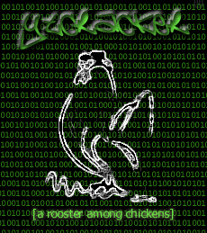

 |
[log
entry] [8.19 pm mst] [original
page here] first off, shouts to the Latin King Nation[hack them gibsons on the street and off niggaz] and the Pakistan Hackuhs Club[niggaz that got flow and purpose]. anyway, i felt i had something to say to society, something worthwhile, something that would trigger interest. that something, is here. people, i ask that we unite in a common goal. enough bickering within and among countries and races. as far as stopping this hatred, we obviously have failed to achieve peace over centuries, thus our efforts have gone to no avail. it is my generation that i wish to see these goals accomplished. in the digital age, we tend to lose touch with ourselves. the internet is supposed to provide information, yet it numbs us from reality, making us zealots to what really matters. oftentimes, we are subject to the chicken and the egg theory. does society make the idiots? do the idiots make the society? curious, isn't it? i doubt any of us have the true answers to these questions. why should individuals below the poverty line suffer an education unbefitting of their potential? why should the government and our society punish them because of their social status? we are doing nothing to be proactive. it is extremely difficult to "move on up out the ghetto" and make a life for yourself. my grandfather did it. one of many. everyone will deny it, but we are holding them there. this, my friends, is no good. i think america[among other countries] should make it a point to correctly educate these individuals and prepare them for the world we are in today. if we want to correct the current situation - suffering violence and hate within the confines of our own species, maybe the answer is right under our noses. sometimes there is no way out but down. sometimes you need to deal drugs to get money to go to college. this is no one's fault but our own. we need to give these people a better way out. crusade alone, and i am defeated. crusade together, and we prevail. the choice is yours... ..ytcracker/s0n shouts to: seven one
nine[ks, tap] |